Servidor web
Quan introduim una URL en un navegador-web, aquest realitza una petició al servidor-web,
el qual respon amb la pàgina web solicitada.
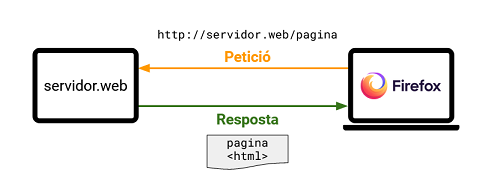
Així doncs, el servidor-web és un programa que s'encarrega de rebre sol·licituds de pàgines web,
busca els fitxers de les pàgines sol·licitades, i els envia de tornada.
Hi ha moltes opcions de programari que s'utilitzen com a servidor web.
La més freqüent és el servidor web Apache.
Instal·lar el servidor-web Apache a Ubuntu és molt senzill, ja que es troba als respositoris apt.
No obstant, utilitzarem el sistema de contenidors LinuxContainers (lxc), per tal
d'aïllar el servidor-web del nostre sistema operatiu. D'aquesta forma podrem instal·lar diversos servidors-web i utilitzar-los
en diferents pràctiques.
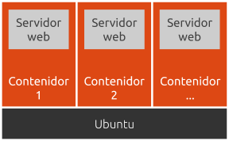
Els contenidors són molt similars a les màquines virtuals. Ofereixen entorns d'execució, aïllats del Sistema Operatiu amfitrió, amb el
seus propis recursos (xarxa, sistema de fitxers, usuaris, etc...).
Per a + info, consulteu: Contenedores frente a máquinas virtuales
Contenidors
Així doncs, el primer pas és instal·lar el sistema de contenidors lxc.
Instal·la lxc amb la següent comanda:
@host
sudo snap install lxd
Inicialitza la configuració de lxd:
@host
sudo lxd init --auto
La utilització bàsica de lxc és:
-
Per a crear un contenidor, únicament hem d'escollir un nom i executar la següent comanda. Per exemple,
per a crear un contenidor anomenat mycontainer, executa al sistema host:
@host
lxc launch ubuntu:20.04 mycontainer
-
Per a accedir al contenidor mycontainer utilitza:
@host
lxc exec mycontainer bash
-
Per a sortir del contenidor, executa en el propi contenidor la comanda:
@mycontainer
exit
-
Per a llistar els contenidors que s'han creat, executa:
@host
lxc list
-
Per a engegar un contenidor:
@host
lxc start mycontainer
-
Per a aturar un contenidor:
@host
lxc stop mycontainer
-
Per a eliminar un contenidor (s'ha d'aturar prèviament):
@host
lxc delete mycontainer
Un cop tenim instal·lat el sistema de contenidors, ja en podem crear un i instal·lar en ell un servidor-web Apache.
Crea un contenidor anomenat mywebserver
@host
lxc launch ubuntu:20.04 mywebserver
Accedeix al contenidor:
@host
lxc exec mywebserver bash
Instal·la el servidor-web Apache dintre del contenidor:
root@mywebserver
apt update
apt install apache2
Ara comprovarem que s'ha instal·lat correctament el servidor-web.
Primer esbrina la IP del contenidor amb la comanda:
root@mywebserver
ip a
Ens sortirà una informació semblant a aquesta:
root@mywebserver
1: lo: <LOOPBACK,UP,LOWER_UP> mtu 65536 qdisc noqueue state UNKNOWN group default qlen 1000
link/loopback 00:00:00:00:00:00 brd 00:00:00:00:00:00
inet 127.0.0.1/8 scope host lo
valid_lft forever preferred_lft forever
inet6 ::1/128 scope host
valid_lft forever preferred_lft forever
21: eth0@if22: <BROADCAST,MULTICAST,UP,LOWER_UP> mtu 1500 qdisc UP group default qlen 1000
link/ether 00:16:3e:5d:fc:ea brd ff:ff:ff:ff:ff:ff link-netnsid 0
inet 10.161.122.237/24 brd 10.50.84.255 scope global dynamic eth0
valid_lft 3572sec preferred_lft 3572sec
inet6 fd42:d5f9:400a:e1f8:216:3eff:fe5d:fcea/64 scope global dynamic mngtmpaddr
valid_lft 7197sec preferred_lft 3597sec
inet6 fe80::216:3eff:fe5d:fcea/64 scope link
valid_lft forever preferred_lft forever
Copiem l'adreça IP que ens surt a l'adaptador eth0 i l'enganxem a la barra d'adreces del Firefox del host:
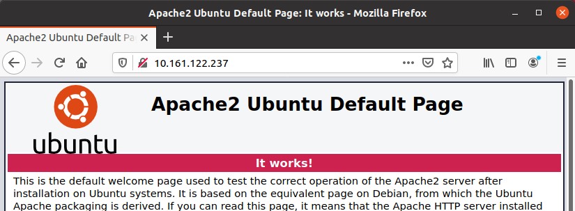
Si ens surt aquesta pàgina 👆 és que està correctament instal·lat:
It works!
Quan introduim l'adreça IP del contenidor a la barra d'adreçes http://10.161.122.237, Firefox realitza
una petició al servidor Apache que tenim al contenidor. El servidor respon al Firefox enviant-li la pàgina que s'ha de mostrar.
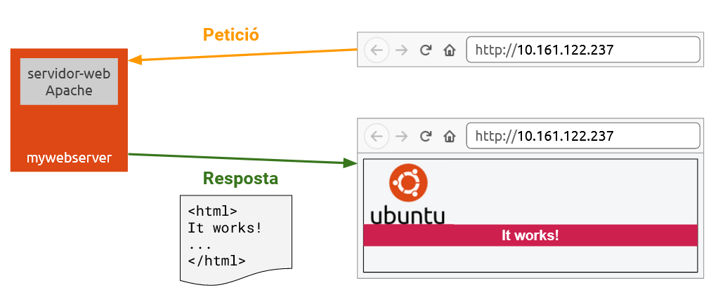
Ara bé, quan diem que el servidor "envia la pàgina" al navegador Firefox,
què significa exactament?
Doncs, el que li està enviant realment és el codi HTML que es troba
al fitxer /var/www/html/index.html que hi ha al contenidor.
Aquest codi HTML descriu què s'ha de mostrar i com.
Vegem el contingut d'aquest fitxer:
root@mywebserver
cat /var/www/html/index.html
El que veurem és el codi HTML de la pàgina web "It works!". De moment no hem
de saber res d'aquest codi. El que sí que anem a fer és canviar aquesta
pàgina web per una altra pàgina que crearem nosaltres.
Es tan fàcil com esborrar aquest arxiu i crear-ne un altre amb el mateix nom.
Utilitzarem l'editor de text de la consola nano.
Esborra l'arxiu /var/www/html/index.html:
root@mywebserver
rm /var/www/html/index.html
Crea'n un de nou amb l'editor nano:
root@mywebserver
nano /var/www/html/index.html
Escriu el següent codi HTML:
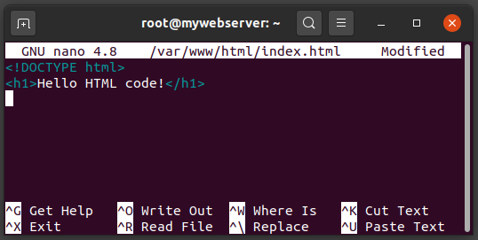
Polsa Ctrl+O per a guardar el fitxer, i després Ctrl+X per a sortir de nano.
Si ara tornem a posar l'adreça IP del contenidor a la barra del
navegador veurem el següent:
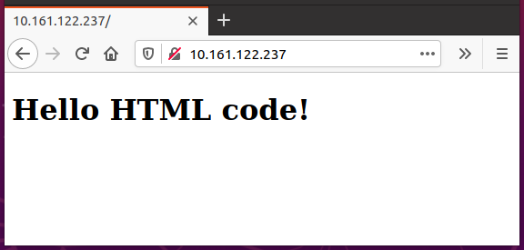
Com hem vist, el servidor Apache envia al navegador Firefox el codi HTML
que hi ha dintre del fitxer /var/www/html/index.html, i
Firefox mostra la pàgina que descriu aquest codi HTML.
Fixa't que els navegadors no mostren el codi HTML. El codi HTML li
indica al navegador quin contingut ha de mostrar i quina estructura
ha de tenir.
En el cas del fitxer index.html,
la etiqueta <!DOCTYPE html> i
la etiqueta <h1>,
no han aparegut a la pantalla del navegador.
La etiqueta <h1> li indica al Firefox que ha de
mostrar el text Hello HTML Code! en lletres grans i en negreta.
Si tens curiositat, aquí tens la llista completa
d'etiquetes del llenguatge HTML:
HTML Reference.
En aquest curs n'aprendrem moltes d'elles, per crear formularis, taules,
llistes, multimèdia, etc...
Accés als fitxers del contenidor
Així doncs, per a crear pàgines web el que haurem de fer és
tocar els arxius de la carpeta /var/www/html
del contenidor.
A l'exemple anterior hem modificat l'arxiu index.html
directament en la consola del contenidor, utilitzant
l'editor nano.
Aquest editor està molt bé per a arxius petits i canvis ràpids,
però per a desenvolupar una web és molt millor utilitzar un editor
com el Visual Studio Code.
Ara bé, el VSCode el tenim instal·lat al host, i
des del host encara no
tenim accés als fitxers del contenidor. El següent
pas serà, aleshores, habilitar l'accés als fitxers del contenidor des del host.
Utilitzarem l'eina sshfs per tal d'aconseguir-ho.
SSHFS ens permetrà connectar una carpeta del contenidor
amb una
carpeta del host, de forma que tot el que realitzem
en un costat també es fa a l'altre costat.
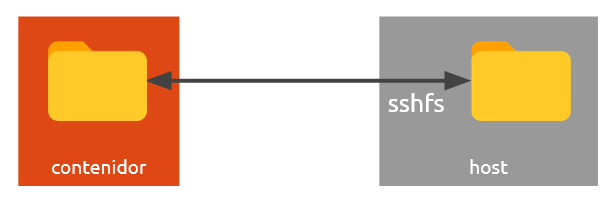
Amb SSHFS, la comunicació entre el contenidor i el host es realitza
mitjançant un canal ssh. Aquest canal requereix
d'una
autenticació prèvia, bé sigui amb usuari/password o bé amb
claus pública/privada.
A continuació instal·larem sshfs i configurarem l'accés amb claus pública/privada.
Instal·lem el programa sshfs al host amb la
comanda:
@host
sudo apt install sshfs
Crearem un parell de claus pública/privada al host:
@host
ssh-keygen -f ~/.ssh/webserver -N ""
El següent pas és copiar la clau-pública del host
al contenidor.
Primer utilitzem cat per mostrar la
clau-pública:
@host
cat ~/.ssh/webserver.pub
Observa que al directory ~/.ssh s'han creat dos fitxers amb les claus. El fitxer acabat amb .pub
és la clau pública i l'altre és la clau privada
A continuació, seleccionem amb el ratolí la clau-pública,
fem clic-dreta i seleccionem Copiar:
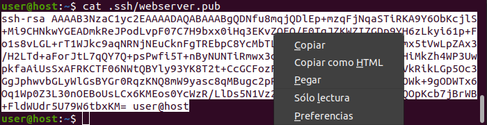
Ara cal enganxar aquesta clau dintre del fitxer
/root/.ssh/authorized_keys del contenidor.
Escrivim echo, espai en blanc, enganxem
la clau copiada polsant
Ctrl+Shift+V
i completem la comanda amb
>> /root/.ssh/authorized_keys
root@mywebserver
echo Ctrl+Shift+V >> /root/.ssh/authorized_keys
La comanda ha de quedar similar a aquesta:
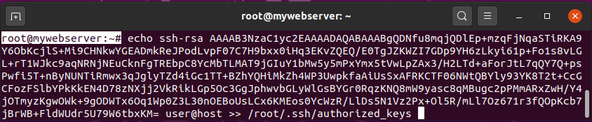
Ara ja podem sincronitzar carpetes entre el host i el contenidor amb sshfs.
Crearem una carpeta al host:
@host
mkdir ~/mywebserver_html
Sincronitzem la carpeta mywebserver_html
del host amb la carpeta
/var/www/html del contenidor.
(substitueix la IP de la comanda per la IP que tingui el teu contenidor)
@host
sshfs root@10.161.122.237:/var/www/html ~/mywebserver_html
El primer cop que fem la connexió ens demanarà validar l'a 'autenticitat de la clau.
Responem yes:
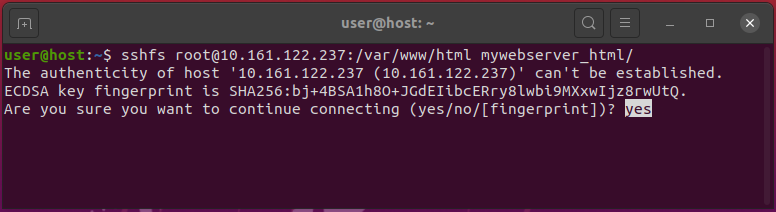
Un cop està feta la connexió, la carpeta
mywebserver_html del host i
la carpeta /var/www/html del contenidor estan sincronitzades.
Ara que ja tenim accés a la carpeta del servidor-web ja podrem
començar a desenvolupar pàgines web utilitzant VSCode.
Pots provar-ho. Obre VSCode i selecciona File > Open Folder...:
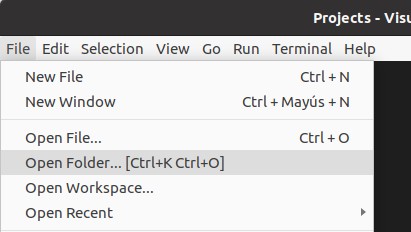
Selecciona la carpeta mywebserver_html:
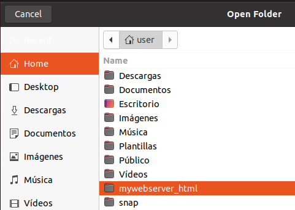
Fes canvis al fitxer index.html (per exemple, pots afegir, amb l'etiqueta <p>, el paràgraf VSCode rules!).
Guarda els canvis amb Ctrl+S.
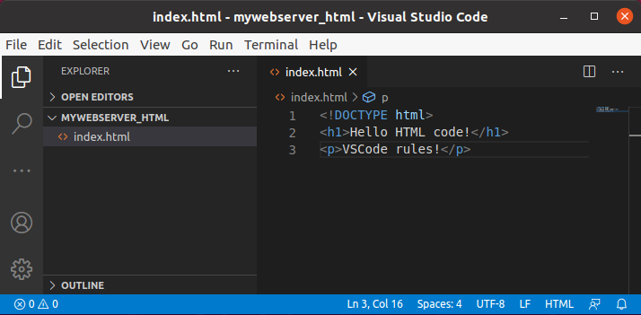
Comprova que la pàgina web s'actualitza.
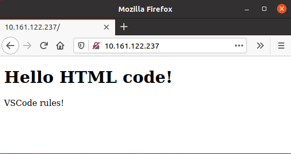
Repositori de codi
Fins ara hem aconseguit crear l'entorn de treball de forma local en el nostre ordinador,
de forma que ja podem desenvolupar webs. Però, a les webs que creem només es podrà
accedir des del nostre ordinador (o la nostra xarxa local). Si volem que les webs estiguin disponibles a Internet,
necessitem un servidor-web que estigui exposat a la xarxa.
Hi ha moltes empreses que ofereixen aquest servei, algunes inclús de forma gratuïta.
Nosaltres utilitzarem GitHub.
GitHub és una plataforma, que ens permet emmagatzemar el nostre codi i portar
el control de les seves modificacions. A més a més, ofereix el servei
GitHub Pages, que permet publicar les pàgines web que pujem a GitHub.
Per utilitzar GitHub, el primer pas és crear un compte.
Si no en tens un, crea't un compte d'usuari a GitHub.
Amb el compte d'usuari, ja ens podem preparar per a pujar les pàgines web a GitHub.
Per a això, necessitem tenir instal·lat el programa git al nostre ordinador.
Instal·la git amb la següent comanda:
@host
sudo apt install git
Configura el teu nom i el teu email:
@host
git config --global user.name "John Doe"
git config --global user.email johndoe@example.com
Podem utilitzar git directament en la consola per a pujar el codi,
però amb VSCode ho farem de forma més senzilla.
Instal·larem l'extensió GitHub
Pull Requests and Issues que ens permetrà interactuar
amb GitHub molt fàcilment des del propi VSCode.
Instal·la l'extensió "GitHub Pull Requests and Issues".
Fes clic sobre el botó 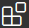, busca l'extensió i fes clic a :
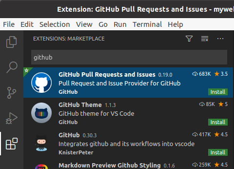
El següent pas és donar accés al nostre compte de GitHub.
Fes clic a 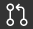 i després a :
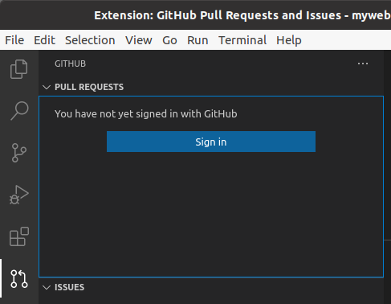
Si no et surt el botó , també pots fer-ho fent clic sobre i després
Sign in to use Github Pull Requests and Issues
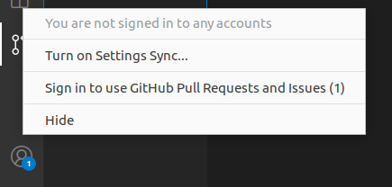
Clica Allow:
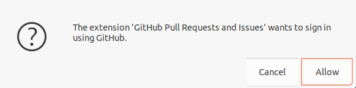
Després fes clic a , i accedeix amb el teu usuari/contrasenya.
Dona-li a Abrir enlace:
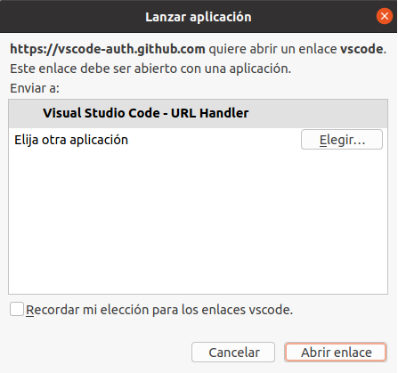
I per últim a Open:
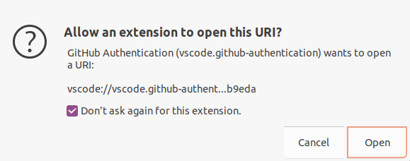
Ara ja tenim accés amb VSCode al nostre compte de GitHub.
Anem a provar que tot funciona correctament publicant una pàgina web.
Edita l'arxiu index.html i escriu el següent codi HTML:
<!DOCTYPE html>
<title>My Github Page</title>
<h1>Welcome to my Github Page</h1>
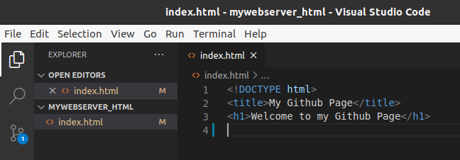
Per a publicar-lo a GitHub, fes clic sobre 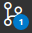 i després a .
En el nom del repository has de posar el teu username seguit de .github.io
i donar-li a 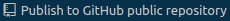
Per exemple, si el teu nom d'usuari de GitHub és monalisa, el nom del repository
quedaria monalisa.github.io
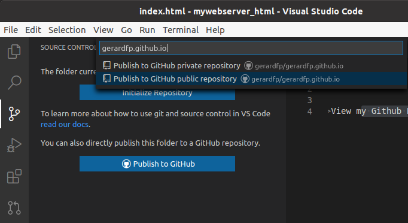
Per últim, comprovem que està seleccionat l'arxiu index.html i li
donem a
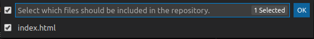
Si accedim a la url monalisa.github.io podem veure publicada
la web que acabem de pujar:
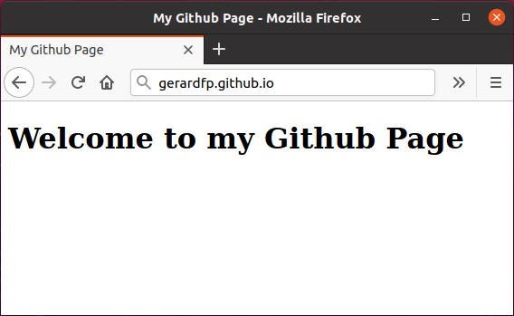
Ara ja tenim muntat completament el nostre entorn de treball. Tenim el servidor-web
Apache instal·lat al contenidor, amb el qual podem visualitzar en local els canvis que
anem fent a la pàgina web, i un cop estiguem satisfets amb aquests canvis, podem publicar
la web a GitHub Pages.
Acabarem aquesta pràctica realitzant un petit canvi a la web, i publicant-lo a GitHub Pages.
Afegeix el següent codi al fitxer index.html
(substitueix el teu nom d'usuari):
<!DOCTYPE html>
<title>My Github Page</title>
<h1>Welcome to my Github Page</h1>
<a href="https://github.com/gerardfp">View my Github Profile</a>
Per a pujar els canvis a GitHub fes clic
sobre , introdueix
un comentari que descrigui els canvis
realitzats i dona-li a Ctrl+Intro:
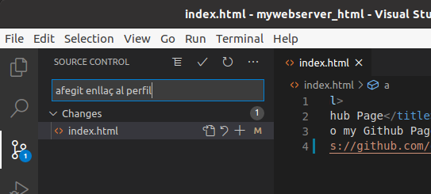
Clica Always
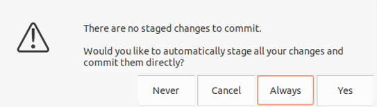
Per últim, fes clic sobre 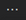
i selecciona Pull, Push>Push:
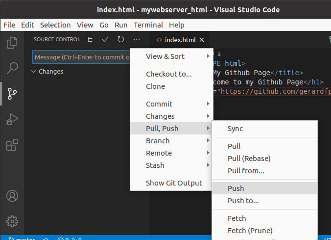
Comprova que s'han publicat els canvis (pot trigar uns minuts):
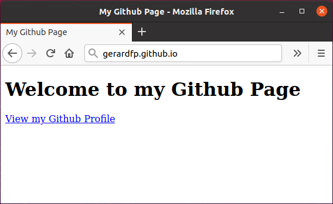